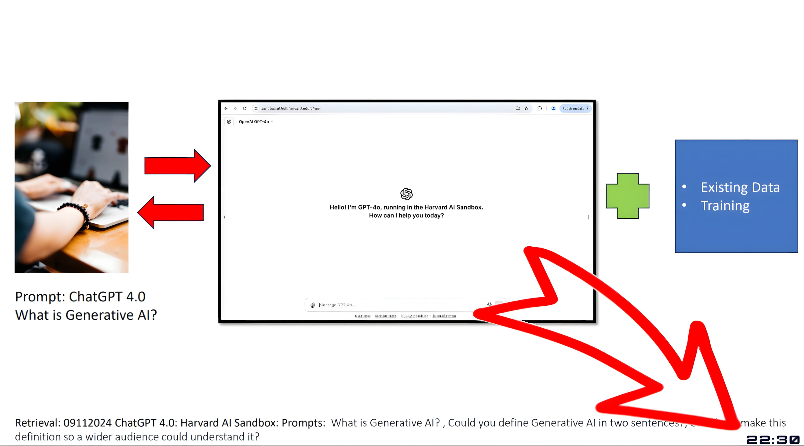

核心特性 ✨
轻巧可爱，功能不少
透明悬浮 & 穿透
像幽灵猫猫一样悬浮，不挡视线，不影响操作，融入桌面背景。
灵活计时模式
预设、自定义、番茄钟，多种模式满足你的不同时间管理需求。
个性化定制
字体、颜色、布局随心搭配，打造专属于你的可爱计时器。
智能超时动作
时间到！自动执行任务，如提醒、锁屏、关机等，省心省力。
轻量高效
C 语言编写，小巧玲珑，资源占用低，运行顺畅不卡顿。
开源免费
遵循 Apache 2.0 协议，免费使用，欢迎大家一起贡献代码~
开源社区认可 ⭐
获得超过 1.3k 的 GitHub 星标，持续增长中
使用场景 🌟
Catime，各种场景的得力助手

游戏场景
在游戏中设置计时器，随时关注休息时间。完全不会影响游戏操作，透明悬浮在游戏界面上，让你掌控游戏时间，避免沉迷过度。

自动打开软件
设置完成后自动打开指定程序，告别传统闹钟的重复确认。无论是提醒你查看邮件、打开会议软件，还是打开你最喜欢的应用，一切都能自动完成。

PPT演示时使用
演讲和演示时的最佳拍档，透明悬浮在PPT上不影响观众视线，帮助你精确控制演讲时间，演示从此更加从容自信，不再担心超时。